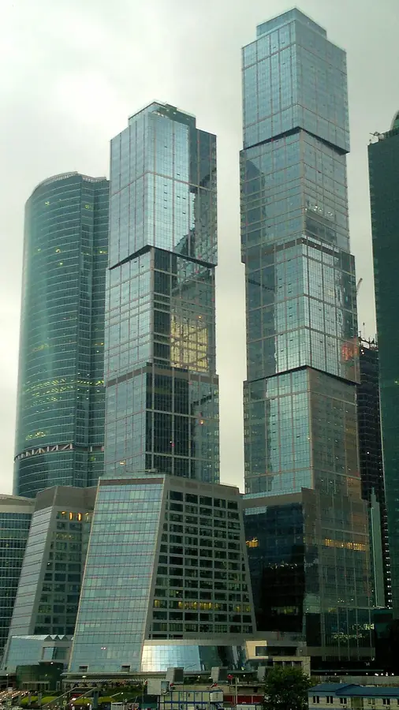

Фото: BpbAlonka, CC BY-SA 3.0 · Wikimedia Commons
Ресторан с террасой · ЦАО
Bamboo.Bar
Ресторан в Москва-Сити с панорамной террасой, зеленью и фонтанами.
- ₽₽₽ · дороже 3 000 ₽ на человека
- в 4 планах
Позвать сюда: Bamboo.BarОткрыть в каталоге: Bamboo.BarМаршрут до места: Bamboo.Bar
Адрес и детали
- Адрес
- Пресненская наб., 8, стр. 1
Открыть на Яндекс Картах (в новой вкладке) - Метро
- м. Деловой центр
- Округ
- Центр (ЦАО)
- Цена
- дороже 3 000 ₽ на человека
- Часы работы
- пн–пт 09:00–06:00; сб, вс 11:00–06:00 · проверили в октябре 2026
- Телефон
- +7 (985) 970-43-41
- Проверено
- работает — проверили в октябре 2026
Планы с этим местом 4
- Смотровая iCITY · Бесплатная смотровая и коворкинг · м. Шелепиха
- 18 минут пешкомBamboo.Bar · Ресторан с террасой
Встретить закат на бесплатной круговой смотровой iCITY, а потом спуститься в квартал на террасу Bamboo.Bar с зеленью и фонтанами — удобно прямо после работы.
Открыть план: Бесплатная смотровая и терраса в СитиПозвать сюда: Бесплатная смотровая и терраса в Сити
Фото: Дарья Симоненко, CC BY-SA 4.0 · Wikimedia Commons
- Пионер · Кинотеатр · м. Выставочная
- 12 минут пешкомBamboo.Bar · Ресторан с террасой
Фестивальное кино на языке оригинала в «Пионере» на Кутузовском, а после сеанса — по мосту «Багратион» в Сити, ужинать на террасе Bamboo.Bar среди небоскрёбов.
Открыть план: Кино в «Пионере» и терраса в СитиПозвать сюда: Кино в «Пионере» и терраса в Сити
Фото: BpbAlonka, CC BY-SA 3.0 · Wikimedia Commons
- Sky Padel · Падел · м. Выставочная
- 4 минуты пешкомBamboo.Bar · Ресторан с террасой
Корт на четверых под стеклянным куполом «Афимолла» — играешь в окружении башен Сити, а потом ужин на террасе Bamboo.Bar прямо в квартале.
Открыть план: Падел среди небоскрёбовПозвать сюда: Падел среди небоскрёбов
Фото: BpbAlonka, CC BY-SA 3.0 · Wikimedia Commons
- Москва-Сити · Деловой квартал · м. Выставочная
- 1 минута пешкомBamboo.Bar · Ресторан с террасой
Прогулка между небоскрёбами Сити и по мосту «Багратион», а потом панорамная терраса Bamboo.Bar с зеленью и фонтанами в минуте ходьбы.
Открыть план: Сити и террасаПозвать сюда: Сити и терраса
Фото: Igorkhait (cropped by Siktira), CC BY 4.0 · Wikimedia Commons


Похожие рядом
Что ещё рядом

Как позвать
- Выбери план, место или событие — в карточке адрес, цены и маршрут в Яндекс Картах.
- Нажми «Позвать сюда» — соберётся приглашение-игра для свидания или голосование для компании.
- Отправь ссылку в любой мессенджер: тебе ответят, а компания отметит, куда и когда может. Бесплатно и без регистрации.